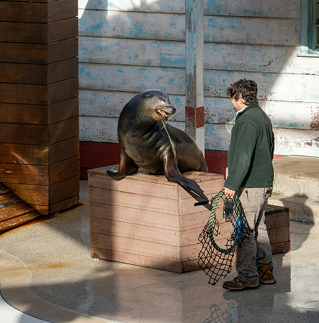
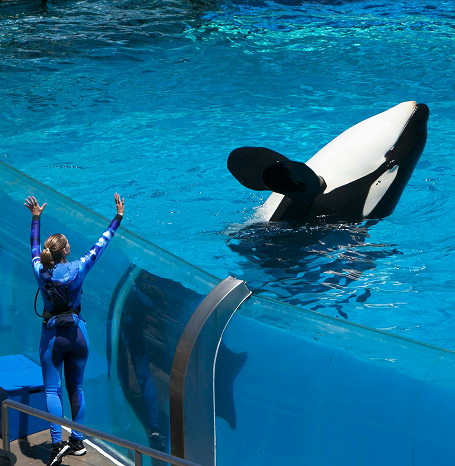
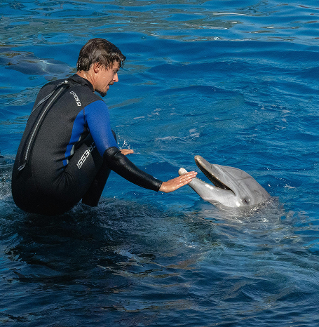

LET’S HAVE FUN WITH US
The Central Ocean Creatur Aquarium regularly hosts exciting and educational events that highlight the bond between marine animals and their trainers. These programs aim to entertain visitors while promoting ocean awareness, conservation, and appreciation for marine life. Some of the featured events include:
- “Ocean Stars Live Show” – A special performance featuring sea lions, dolphins, and orcas demonstrating their natural abilities and learned behaviors, led by trainers Brolyn Conner, Raphael Kent, and Wanda Armstrong.
- “Behind the Waves: Trainer for a Day” – An interactive experience where visitors shadow professional trainers to learn how they care for and communicate with marine animals.
- “Marine Conservation Week” – A week-long event focused on ocean protection, featuring educational talks, demonstrations, and conservation workshops led by the aquarium’s training team.
- “Sea Life Celebration Festival” – A family-friendly event with themed exhibits, live feeding sessions, ocean games, and meet-and-greet sessions with the trainers and their animals.
- “Night at the Aquarium: Ocean Encounters” – An evening showcase with light displays, synchronized animal performances, and storytelling about marine life and trainer experiences.
MEET YOUR OCEAN FRIEND AND THEIR TRAINER
The following lists feature animals that have undergone extensive, long-term training to develop a deep level of understanding and connection with humans, as well as trainers from Central Ocean Kreatur who have dedicated over a decade of expertise to working with these remarkable animals.
Brolyn Connor
Brolyn Conner is a seasoned sea lion trainer with 10 years of experience at the Central Ocean Creatur Aquarium. Passionate about marine life and animal behavior, he specializes in sea lion care, training, and enrichment. Through his work, Brolyn promotes positive reinforcement techniques and engaging public shows that inspire visitors to appreciate and protect ocean wildlife.

Wanda Armstrong
Wanda Armstrong is an experienced orca whale trainer who has been working at the Central Ocean Creatur Aquarium for 11 years. She is dedicated to the care, training, and enrichment of orcas, focusing on building trust and strong communication with the animals. Wanda’s expertise and passion for marine conservation help educate visitors about the intelligence and importance of protecting these magnificent ocean creatures.

Raphael Kent
Raphael Kent is a skilled dolphin trainer with 13 years of experience at the Central Ocean Creatur Aquarium. He specializes in dolphin behavior, care, and performance training, using positive reinforcement techniques to build strong bonds with the animals. Raphael is passionate about marine education and strives to inspire visitors to appreciate and protect ocean life through his engaging and educational dolphin presentations.
